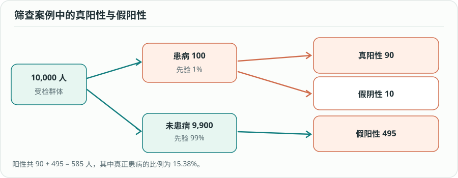
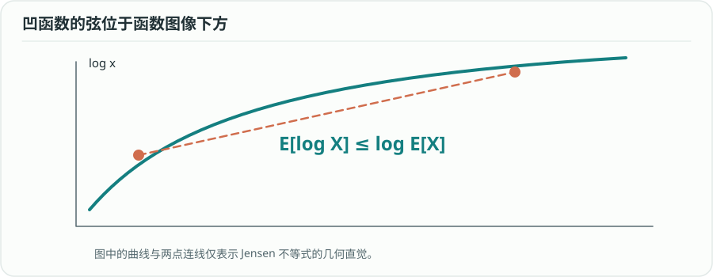

一次阳性检测，真的有九成概率患病吗？
设某病在人群中患病率为 1%，检测灵敏度为 90%，假阳性率为 5%。当检测显示阳性时，真正患病的概率并不是 90%：灵敏度回答的是“已经患病的人中，有多少会阳性”，而我们需要的是反过来的条件概率。

此例说明概率不是“凭感觉挑数字”，而是必须明确样本空间、事件条件与参考群体。
联合概率、条件概率、独立性
对事件 A、B，若 P(B)>0，则条件概率定义为 P(A|B)=P(A∩B)/P(B)，从而 P(A∩B)=P(A|B)P(B)。独立性需要满足 P(A∩B)=P(A)P(B)，并非“两个事件看起来不同”就能假定。
随机变量 X 的分布 p(x) 给出每一种可能值的概率，必须满足 p(x)≥0 且所有结果概率之和为 1。离散联合分布 p(x,y) 可以按 y 求和得到边缘分布 p(x)；这一步叫边缘化。
贝叶斯定理：把似然变成后验
用 D 表示患病、+ 表示检测阳性。贝叶斯公式把先验 P(D)、似然 P(+|D) 与全概率 P(+) 联系起来：
代入数字：0.9×0.01/(0.9×0.01+0.05×0.99)=0.153846…。随着先验改变，即使检测器的灵敏度与假阳性率不变，后验也会明显变化。
固定灵敏度 90%、假阳性率 5%。输出是阳性条件下的后验概率。
期望和方差如何汇总随机结果
期望 E[f(X)] 是对 f(x) 按 p(x) 的加权平均。方差 Var(X)=E[(X−E[X])²] 描述数值围绕均值的波动，而信息论中的熵则是对“事件自信息”求期望，度量的是预测不确定性。二者不是同一概念。
例如，公平硬币把正反编码为 0、1 时，期望为 0.5，方差为 0.25；若把两个结果编码为 −1000、+1000，熵仍为 1 bit，但方差大幅变化。熵对标签的数值间距不敏感，而方差敏感。
Jensen 不等式为什么重要？
若 f 是凸函数，则 f(E[X])≤E[f(X)]；若 f 是凹函数，不等号反向。对数 log 是凹函数，因此 E[log X]≤log E[X]，其中 X 必须为正且相关期望存在。

信息论中，Jensen 是证明 KL 散度非负等重要结论的工具。它不是一句口号：函数的凸凹性、取值区间和权重归一化缺一不可。
prior, sensitivity, false_positive = 0.01, 0.9, 0.05
posterior = sensitivity * prior / (
sensitivity * prior + false_positive * (1-prior)
)
assert abs(posterior - 90/585) < 1e-12
print(round(posterior * 100, 2)) # 15.38常见混淆
- 反向条件概率：P(A|B) 与 P(B|A) 通常不等。
- 基础率忽视：低基率现象中大量假阳性会主导观察结果。
- 不独立时错误相乘：P(A∩B) 不能随意写作 P(A)P(B)。
- 取对数前忘记检查定义域：Jensen 中 log 的自变量必须为正。
来源与延伸阅读
本章使用有限离散分布和以 2 为底的对数，除非另有说明。以下经典原始与教学资料可以用来核验定义、假设和推导。
- Claude E. Shannon, A Mathematical Theory of Communication (1948) — 通信系统与熵的原始框架。
- Cover & Thomas, Elements of Information Theory, Chapter 2 — 熵、互信息、KL、Jensen 与 DPI 的系统性推导。
- MIT 6.441 Information Theory 讲义 — 可供复核定义与不等式的大学课程材料。